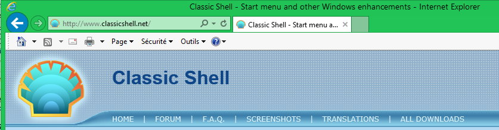
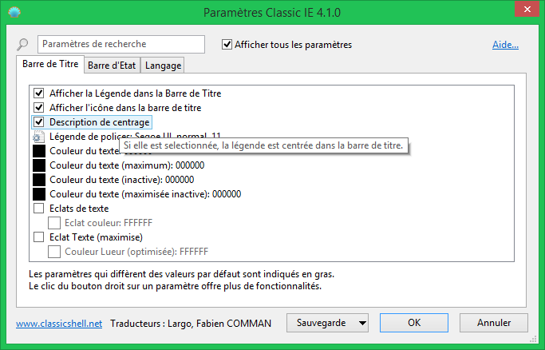

Classic IE
Classic IE
Classic IE
est une extension pour Internet Explorer qui :
- Ajoute une légende à la barre des titres de façon à ce que vous puissiez voir le titre complet de la page
- Affiche la zone de sécurité dans la barre de statut
- Affiche le progrès de chargement dans la barre de statut
Afficher le titre complet de la page même lorsqu’il ne s’adapte pas à l’onglet :

Voir le progrès et la zone de sécurité :
Installation
Quand vous lancez Internet Explorer pour la première fois après avoir installé
Classic IE il vous avertira peut être qu’un nouveau module complémentaire nommé ClassicIEBHO est installé et si vous voulez l’activer.
Cliquez sur le bouton activer. Si vous n’avez cet avertissement, allez dans Outils -> Gérer les modules complémentaires et assurez-vous que ClassicIEBHO est activé. Après avoir activé le module complémentaire vous devrez redémarrer Internet Explorer pour activer l’extension.
Paramètres
Vous pouvez accéder aux paramètres à partir de Outils -> Classic IE Settings
ou à partir du menu démarrer. Les paramètres contrôlent la couleur et la police de la légende, et quelles informations sont à afficher dans la barre de statut.

Vous pouvez choisir de voir seulement les paramètres de base, ou tous les paramètres disponibles. Survolez chaque paramètre pour voir une description de leur fonction.
Saisissez un mot dans la zone de recherche pour retrouver un paramètre par son nom.
Chaque paramètre à une valeur par défaut. La valeur par défaut peut être une constante, ou elle peut dépendre des paramètres systèmes actuels.
Une fois que vous avez modifié un paramètre il devient "modifié" et est afficher en gras. Pour revenir à sa valeur par défaut, clic droit sur le paramètre.
Vous pouvez enregistrez les paramètres vers un fichier XML, et les recharger plus tard.
Appuyez sur le bouton Sauvegarde pour accéder à ces fonctions. A partir de là vous pouvez aussi réinitialiser tous les paramètres à leurs valeurs par défaut.
Appuyez sur OK pour stocker vos paramètres. Vous devrez redémarrer Internet Explorer pour appliquer les nouveaux settings.
Administrative Settings
Les paramètres sont par utilisateur et sont stocker dans la registrerie. Par défaut chaque utilisateur peut modifier n’importe quel paramètre. Un administrateur peut verrouiller des paramètres spécifiques, de façon à ce qu’aucun utilisateur ne puisse les modifier. Ceci est achevé en ajoutant le paramètre à la clef de registrerie HKEY_LOCAL_MACHINE\SOFTWARE\OpenShell\ClassicIE
Vous voudrez peut être ne pas verrouiller le paramètre mais seulement surcharger sa valeur initiale. Pour cela, ajoutez "_Default" au nom de la valeur de la registrerie.
La façon la plus facile de connaître le nom registrerie d’un paramètre et ça valeur pour la modifier, est de la rechercher dans HKEY_CURRENT_USER\Software\OpenShell\ClassicIE\Settings.
Quelqes fois vous voudrez verrouiller un paramètre à sa valeur par défaut, mais vous ne savez quelle est la valeur par défaut. Dans ce cas créez une valeur DWORD et
configurez là à 0xDEFA.
Il y a aussi un paramètre global EnableSettings. Configurez le à 0 dans la registrerie pour même empêcher les utilisateurs d’ouvrir la boîte de dialogue des Paramètres :

Modifier les paramètres au travers des stratégies de groupe est aussi supporté. Décompressez le fichier PolicyDefinitions.zip qui se trouve dans le dossier d’installation et lisez le document PolicyDefinitions.rtf pour plus de détails.